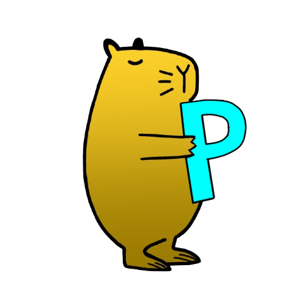
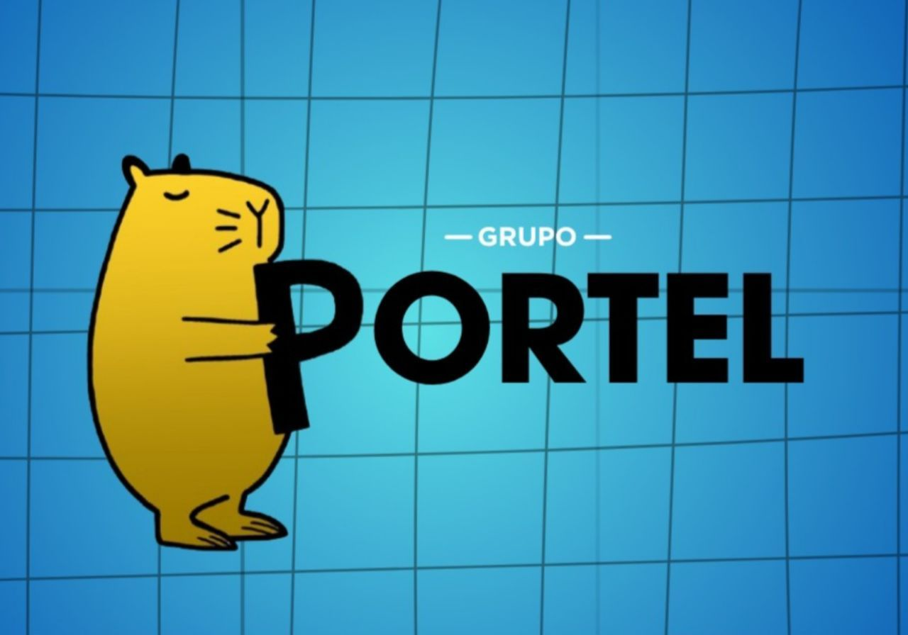

Estratégia liderada por quem responde pela operação
O planejamento estratégico e a condução da metodologia são liderados diretamente pelo fundador, com acompanhamento próximo das decisões críticas.

O Grupo Portel identifica onde a sua operação perde oportunidades e implementa o sistema necessário para organizar aquisição, oferta, CRM, vendas, retenção e crescimento.
Para empresas que já vendem, reconhecem um problema comercial e têm disposição para participar da implementação.
Marca, oferta, presença, funil, CRM, vendas e retenção podem parecer problemas separados. Nós conectamos os sinais para encontrar o gargalo que deve ser resolvido primeiro.
O diagnóstico aponta a prioridade. A implementação transforma essa decisão em ativos, processos, responsáveis, prazos e indicadores que a empresa consegue acompanhar.
O Grupo Portel conecta estratégia e execução para transformar aquisição, pré-venda e fechamento em uma operação comercial única.

O Grupo Portel nasceu para resolver um problema recorrente: empresas investem em marketing, ferramentas e equipe, mas perdem oportunidades porque essas partes não operam como um sistema.
Entramos na operação para identificar vazamentos, construir os ativos necessários e criar uma rotina comercial orientada por dados — sem fórmulas prontas ou relatórios que não levam a uma decisão.
Quatro fases para diagnosticar a jornada, corrigir os gargalos e escalar apenas o que já provou gerar resultado.
Mapeamos oferta, canais, mensagens, CRM, equipe e indicadores para localizar o ponto que mais limita a receita hoje.
Construímos e ajustamos os ativos que faltam: páginas, campanhas, qualificação, roteiros, automações e rotina comercial.
Com o processo validado, ampliamos investimento, volume e capacidade comercial sem perder controle sobre qualidade e conversão.
Ativamos retenção, recompra, upsell e cross-sell para aumentar o valor da base conquistada e reduzir a dependência de novas vendas.
A metodologia é indicada para operações em que confiança, qualificação e processo comercial têm impacto direto na decisão de compra.
Ciclos de vendas longos que exigem quebra de objeções técnicas e previsibilidade de caixa.
Necessidade de reduzir o Custo de Aquisição (CAC) e aumentar a retenção de assinaturas (LTV).
Dependência de indicações substituída por prospecção ativa e marketing focado em conversão.
Estruturação de times comerciais de campo apoiados por inteligência de dados e CRM.
Atração de pacientes para procedimentos de alto ticket através de autoridade e posicionamento.
Transição da venda por impulso para a venda consultiva e fidelização de clientes premium.
Cada etapa prepara a próxima decisão. Assim, o vendedor recebe oportunidades com mais contexto e não precisa reconstruir valor do zero.
Do primeiro contato
À receita previsível
Cada empresa perde receita em um ponto diferente. Por isso, o trabalho começa pelo diagnóstico e prioriza o que tem maior potencial de impacto.
Podemos começar por aquisição, qualificação, CRM, reunião, gestão ou retenção. O critério não é o tamanho do pacote: é a capacidade de remover o gargalo que impede a operação de avançar.
A jornada comercial começa pequena, valida a prioridade e só depois transforma o diagnóstico em implementação.
A implementação só é apresentada quando a prioridade está demonstrada. Escopo, entregáveis, responsabilidades, dependências e próximos marcos ficam definidos antes do início.
Você entende o problema, o plano e o papel de cada parte antes de decidir.
Solicitar avaliação inicialA avaliação inicial é sem custo. Em até 10 horas úteis, analisamos as informações e entramos em contato para verificar aderência e indicar o próximo passo.
O problema raramente está em uma única campanha. Ele aparece quando uma etapa da jornada não prepara a próxima.
A promessa atrai atenção, porém não filtra quem realmente pode avançar na compra.
A marca publica, mas o lead ainda chega sem perceber urgência, diferença ou valor.
Sem critérios e perguntas claras, o SDR transfere contatos em vez de oportunidades.
A call precisa reconstruir confiança do zero, alongando o ciclo e pressionando a negociação.
O planejamento estratégico e a condução da metodologia são liderados diretamente pelo fundador, com acompanhamento próximo das decisões críticas.

Para empresas que já possuem uma oferta validada e clientes, reconhecem um problema comercial relevante e querem organizar a jornada de compra. A avaliação inicial verifica se o momento e o modelo da operação têm aderência ao trabalho.
Somos uma assessoria de implementação. Além de orientar, construímos os ativos definidos no escopo, estruturamos o CRM, apoiamos campanhas e treinamos o time comercial com acompanhamento da execução.
O ciclo é definido depois do Plano de Ação Estratégico, porque depende do gargalo, da maturidade da operação e do volume de implementação necessário. Prazo, escopo e responsabilidades são apresentados antes da contratação.
Não. A avaliação inicial é uma conversa sem custo para entender o cenário e verificar aderência. O diagnóstico completo acontece no Plano de Ação Estratégico de R$ 497, que analisa as áreas relevantes, prioriza o gargalo e entrega um plano de decisão.